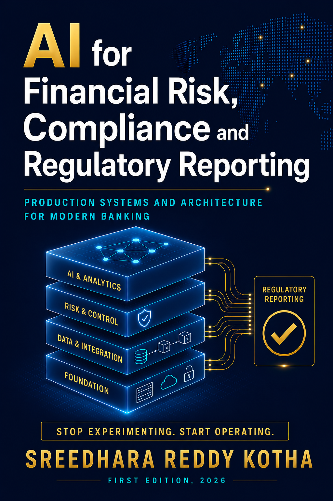

Built around Avon & Wessex Bank plc — a fictional £40B UK bank under PRA and FCA supervision — the book follows its complete AWB-AI-2026 programme from business case to production: agentic credit decisioning, RAG-grounded regulatory intelligence, and governance engineered to PRA SS1/23, the EU AI Act, and DORA from day one. Every system described ships as working, tested Python in this repository — not pseudocode. Every ROI figure follows the same six-step methodology — baseline cost, deflection rate, system cost, net saving, build cost, and three-year NPV at an 8% hurdle rate — and that discipline compounds, by the closing chapter, into a documented £12.1M in cumulative annual savings from a £3.2M initial investment. The book does not shy away from what goes wrong: a £12M near-miss in Chapter 4, where an ungrounded RAG query nearly returned a confidently wrong capital calculation, and an £840 overnight API bill in Chapter 3 that permanently changed how AWB designs agent cost controls, are treated with the same rigor as the successes. Governance is never an afterthought bolted on at the end — the PRA SS1/23 four-gate deployment framework, EU AI Act human-oversight checkpoints, and DORA's 70% LLM-concentration cap are load-bearing constraints from Chapter 1 onward, the same constraints every system in this repository is built and tested against.
Each chapter maps to one or more production AI systems in the AWB model registry. Follow the folder link to browse everything for that chapter, or jump straight to the core agentic pipeline file.
Every production AI system rests on three pillars: a compelling business case, a well-governed LLM layer, and a shared technical foundation. Part I builds all three for AWB, ending with four registered models and a reusable awb_commons library used in every chapter that follows.
AWB faces three converging pressures — regulatory complexity, cost, and AI-native competitors — that make this the decisive moment for AI adoption in UK banking. This chapter lays the foundation: the £3.2M AWB-AI-2026 programme business case, the six-step ROI methodology used throughout the book, and the UK/EU regulatory map every later system is built against.
Introduces the transformer architecture and prompt-engineering patterns behind every LLM in the book, then builds the Credit Document Analyser (MR-2026-035) — cutting financial data extraction from up to 90 minutes to 18 minutes per document at 97.3% accuracy, fully PRA SS1/23 and EU AI Act compliant.
Extends the Document Analyser into a full agentic workflow — the Credit Decision Agent (MR-2026-037) — orchestrating four sub-agents into a Basel III IRB/CRR3-compliant credit recommendation. A parallel Treasury Operations Agent cuts the morning cash-positioning cycle from 6 hours to 25 minutes, for £2.1M/year combined saving.
Builds the Regulatory Knowledge Assistant (MR-2026-038), grounding answers across 847 PRA, FCA, and EBA documents after a near-miss where an ungrounded query nearly caused a £12M capital miscalculation. Introduces the RAGAS evaluation harness and hybrid retrieval that make regulatory RAG auditable.
Builds the AI Governance Platform that registers, validates, and monitors every model in the book under PRA SS1/23's three pillars — registration, independent validation, and ongoing monitoring. Cost £48.5K to build against the £2.8M s166 skilled-person review it protects AWB from.
Part II applies the Part I foundations to the five core risk domains every UK bank must manage — credit, market, operational, liquidity, and model risk — each delivered as a production-grade system with a full ROI derivation.
Replaces AWB's fragmented credit monitoring with the Credit Intelligence Monitor — five modules spanning covenant compliance, adverse news, PSI drift, IFRS 9 staging, and CFO narrative — on one Airflow DAG and one governance registration. Its credit API becomes the PD source for Chapter 7's CVA and the staging feed for Chapter 11's regulatory reporting.
Applies the same platform discipline to the trading book — Monte Carlo VaR, expected shortfall, FRTB SA/IMA, and a CVA calculator consuming Chapter 6's PD term structure. Cut FRTB back-test exceptions from ~10/year to 3, avoiding a capital multiplier that would have raised SA-FRTB capital up to 4×.
Builds AWB's payment fraud detector, NLP loss-event classifier, and application fraud scorer inside the same governance frame. The fraud model scores 2.4M daily transactions at P99 54ms, targeting a reduction from £7.2M to under £1.5M/year in fraud losses.
Moves to the tightest time constraints in the book — a miscalculated intraday position can trigger a CHAPS settlement failure within hours. Builds real-time LCR/NSFR engines and an intraday monitor (BCBS 248) that fixed the architectural gap behind a March 2025 CLAR breach, for £2.75M net annual benefit.
Builds the enterprise Model Risk Management platform — validation, monitoring, and governance for every AI/ML model built through Chapter 9 — answering not "can we build a better model" but "can we prove it can be trusted." Governs all registered systems under one Model Risk Committee.
Having mastered the five core risk domains, Part III turns to the regulatory and financial crime obligations that sit across every domain — where AI becomes a compliance accelerator, monitoring obligations in real time and generating the machine-readable evidence regulators increasingly require.
Automates what previously took 2.4 FTE per quarter — COREP capital returns, LCR/NSFR calculations, and the CRR3 Art.429 leverage ratio return — cutting the quarterly cycle from 340 analyst-hours to 45 (94% reduction). AWB's Q4 2025 leverage ratio of 4.2% clears the 3.0% Pillar 1 minimum by 120bps.
Builds AWB's AML, KYC, and financial crime prevention platform — digital identity verification, ML transaction monitoring, and borrower KYC — under POCA 2002, FCA SYSC 6.3, and JMLSG guidance. Cut false-positive alerts 80% (8,400 to 1,680/month) while maintaining 340 SARs/year, saving £1.15M/year.
Building individual AI models is straightforward; running them reliably in a regulated bank is a different engineering challenge. Part IV covers the microservices architecture, MLOps/LLMOps pipeline, and BCBS 239-compliant data platform that make everything else sustainable.
Connects everything built in Parts I–III into one enterprise platform — microservices, multi-cloud DORA resilience, and Temenos T24 integration — after three independently designed systems that couldn't integrate cost AWB eleven weeks of unplanned rework and a DORA incident. The shared awb_commons library now underpins all 23 AI services.
Builds the operational discipline that keeps 23 AI models reliable in production — CI/CD retraining pipelines, prompt versioning, and drift monitoring — making it structurally impossible to deploy a model that hasn't passed the four-gate pipeline. If Chapter 13 is the motorway network, this is the traffic management system.
Builds the least visible, most load-bearing layer of the platform — a BCBS 239-aligned risk data warehouse, a point-in-time feature store, and GDPR-compliant governance feeding 20+ AI systems. Data quality is scored across 11 BCBS 239 principles at a 9.2/10 target.
The capstone: taking fifteen chapters of individually validated AI systems and integrating them into one coherent, production-ready platform the CRO can rely on at 07:30 on a Monday morning.
The capstone — unifies Customer 360, the risk data warehouse, the feature store, and all systems built across Chapters 1–15 into one CRO/CFO dashboard with real-time risk position and BCBS 239 compliance views, closing AWB's final data-distribution gap in a single orchestration layer.
Reference material from the book's appendices, kept current between print editions.
~100 AI/ML, regulatory, and AWB-specific terms, reproduced from the book's own glossary.
Article-level summaries: PRA SS1/23, EU AI Act, DORA, CRR3/Basel IV, POCA, FCA Consumer Duty.
Approved LLM models (Table 1.9), library versions, AWS services, and per-chapter cost estimates.
Every MR reference in the book, cross-referenced to its chapter — primary systems and agentic pipelines.